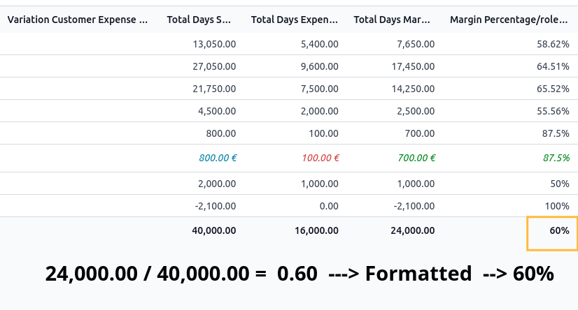
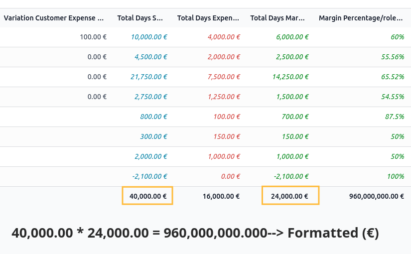
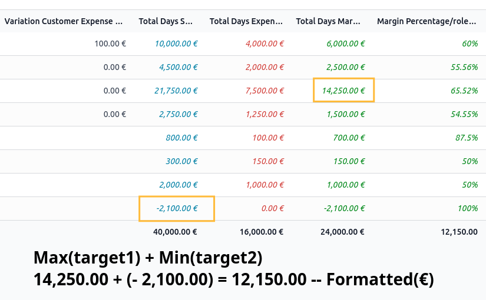
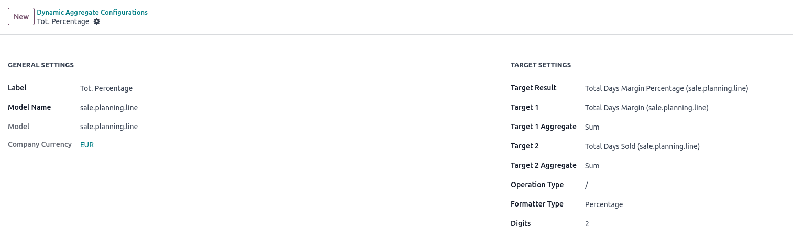

Dynamic Aggregate
The Dynamic Aggregate module facilitates dynamic aggregation under
the list/tree view in Odoo. Users can define configurations to compute
values based on specified operations and columns, and display the
computed result in a chosen target column.
Example: Percentage (Total sum of one column divide by the total
sum of another column and formatted with the percentage

Example: Multiplication (Total sum of one column multiplied by
the total sum of another column and formatted with the currency symbol
(selected)

Example: Sum (Maximum value of one column + minimum of another
column formatted as float)

Configuration
After installing the dynamic_aggregate
module, follow these steps to configure it:
- Navigate to Settings -> Dynamic Aggregate Settings.
- Click Create to add a new aggregation
configuration.
- Configure the following settings:
- Label: Select the label of field when hovering over
the result.
- Model: Select the model for which you want to
configure dynamic aggregation.
- Target Column: Choose the target column where the
computed value should be displayed.
- Operation: Select from addition (+), subtraction
(-), division (/), or multiplication (*).
- Target 1: Choose first target of operation (must be
of type float, integer, or monetary).
- Target 2: Choose second target of operation (must
be of type float, integer, or monetary).
- Target 1 Aggregate Function: Select the aggregation
function for each of the chosen columns (sum, avg, min, max)
- Target 2 Aggregate Function: Select the aggregation
function for each of the chosen columns (sum, avg, min, `max)
- Format Type: Choose the formatting type for the
computed value (monetary, float, integer, percentage).
- Digits: Specify the number of decimal places for
the formatted result.
- Save the configuration.
Usage Example
Suppose you want to calculate the exact percentage between two
columns by taking the sum of each column and formatting it as a
percentage. Here’s how you can configure it:
Navigate to the Dynamic Aggregate
module from the homepage.
Create a new configuration:
- Model: Choose the model(in this case
sale.planning.line).
- Target Column: Select the target column where you
want to display the percentage.
- Operation: Choose /
(division).
- Target 1: Select the first target of the first
dataset.
- Target 2: Select the second target of the second
dataset.
- Target 1/2 Aggregate Function: Choose sum for both target columns.
- Format Type: Select percentage.
- Decimal Precision: Specify the precision (e.g., 2
for two decimal places).
Save the configuration.

In this example, the module computes the exact percentage between the
sums of two columns and displays the result formatted as a percentage,
which Odoo does not directly support.
Features
- Dynamic aggregation of data under list/tree view in Odoo.
- Supports operations such as addition, subtraction, division, and
multiplication.
- Allows selection of columns and their respective aggregation methods
(sum, min, max, avg).
- Flexible formatting options including monetary, float, integer, and
percentage with customizable decimal precision.
IMPORTANT: Aggregates can only be managed in the list
view.
Maintainers
This module is maintained by Rapsodoo.
Rapsodoo is one of Odoo Europe's leading
partners focusing on large and mid-sized enterprises. It is developed by
a team of senior entrepreneurs and investors with the "crazy dream" of
bringing together younger entrepreneurs and talented individuals to
build a unique, inspired, focused, and enjoyable international
group.